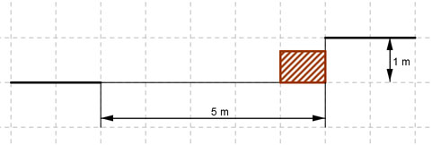

Aufgabe 128 Eine Hauseinfahrt hat zur Straße hin einen Höhenunterschied von 1 m. Sie soll mithilfe einer ganzrationalen Funktion so gestaltet werden, dass sie waagerecht 5 m von der Straße entfernt beginnt und waagerecht in die Straße einmündet. 1 m von der Straße entfernt liegt auf Hausebene ein 70 cm hoher Felsbrocken. In welchem Abstamd überstreicht ihn die geplante Einfahrt?  Die gesuchte ganzrationale Funktion muss mindestens 3. Grades sein, da sich das Krümmungsverhalten vom Haus aus von einer Links- zu einer Rechtskrümmung (Wendepunkt) verändern muss. f(x) = ax3 + bx2 + cx + d f’(x) = 3ax2 + 2bx + c 4 Bedingungen: 1. Geht durch den Punkt (0|0) bedeutet: f(0) = 0 --> a * 03 + b * 02 + c * 0 + d = 0 --> d = 0 2. Waagerecht beginnen bedeutet: f’(0) = 0 --> 3a * 02 + 2b * 0 + c = 0 --> c = 0 3. Geht durch den Punkt (5|1) bedeutet: (c = 0 und d = 0 eingesetzt) f(5) = 1 --> a * 53 + b * 52 = 1 --> 125a + 25b = 1 I 4. Waagerecht einmünden bedeutet: (c = 0 eingesetzt) f’(5) = 0 --> 3a * 52 + 2b * 5 = 0 --> 75a + 10b = 0 II II * (-2,5) + I -187,5a - 25b = 0 125a + 25b = 1 ------------------ -62,5a = 1 |:(-62,5) 10 2 a = - ------ = - ----- 625 125 a = -2/125 in I eingesetzt: 125 * (- 2/125) + 25b = 1 -2 + 25b = 1 |+2 25b = 3 |:25 b = 3/25 f(x) = -(2/125)x3 + (3/25)x2 Abstand Einfahrt - Felsbrocken: f(4) = -(2/125) * 43 + (3/25) * 42 f(4) = -1,024 + 1,96 f(4) = 0,896 m = 89,6 cm Abstand: 89,6 cm - 70 cm = 19,6 cm